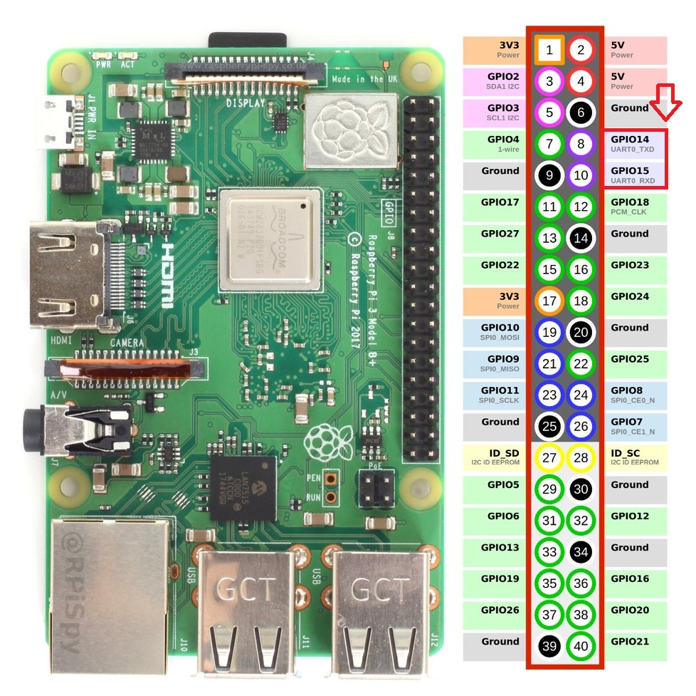
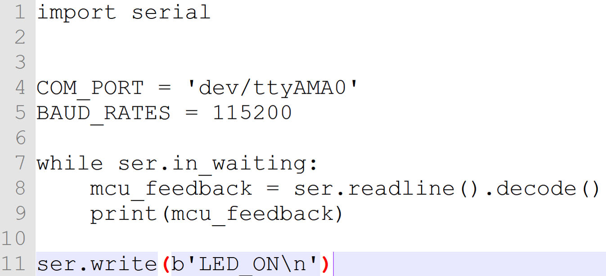
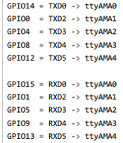

Raspberry pi uart
使用python Raspberry pi uart
Raspberry pi uart介紹
樹莓派3 有2個UART 一個為硬體控制傳輸另一個為CPU軟體控制分別為/dev/ttyAMA0，/dev/ttyS0
GPIO14 TX GPIO15 RX 使用個2個pin來進行傳輸Raspberry pi uart設定
使用putty 執行 ls -l /dev 會發現serial0預設關閉 而 serial1 -> /dev/ttyAMA0使用putty 執行 sudo raspi-config 開啟Serial使用putty 執行 sudo nano /boot/cmdline.txt 刪除console=serial0,115200使用putty 執行 ls -l /dev 會發現serial0-> /dev/ttyS0 而 serial1 -> /dev/ttyAMA0使用putty 執行 sudo nano /boot/config.txt 新增下列3行使用putty 執行 ls -l dev 會發現serial1-> /dev/ttyS0 而 serial0 -> /dev/ttyAMA0AMA0?
為什麼要用/dev/ttyAMA0 ? 因為AMA0預設給藍牙並且有獨立硬體運算較穩定故關閉藍牙改為使用此通訊使用python進行通訊測試

Raspberry pi 4 uart設定
注意! 限定Raspberry pi 4使用
使用putty 執行 sudo nano /boot/config.txt 新增下列重新啟動後使用putty 執行 ls /dev/AMA*檢查是否成功開啟